Baptiste Pras
I am a second-year Master's student (M2) in Artificial Intelligence at Université Paris-Saclay and part of the PhD Track program. With research experience in Computer Vision and NLP, I am actively seeking a 6-month end-of-studies internship starting in early 2027.

Education
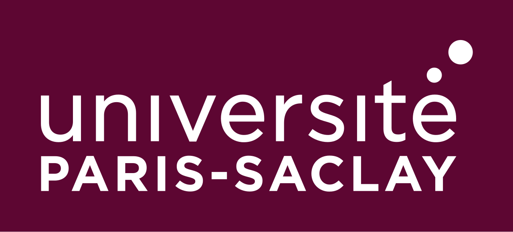
I am pursuing a Master's degree in Artificial Intelligence (PhD track) at Université Paris-Saclay since September 2025. Before that, I completed the Magistère d'Informatique honors research program (2024 to 2025, graduated with honors) and a double bachelor's degree in mathematics and computer science (2022 to 2024), both at Université Paris-Saclay. My courses cover machine learning, deep learning, optimization, NLP, computer vision, signal processing, reinforcement learning, and the theoretical foundations of AI.
I spent a year at EF New York (2019 to 2020) in an intensive English language program, which I completed with C2 proficiency. I have since scored 108/120 at the TOEFL iBT and 990/990 at the TOEIC.
Publications and Conferences
- Point-Based Counting of Cereals and Legumes in Intercropped Fields, 11th Junior Conference on Data Science & Engineering (Poster), 2026 PDF Poster
- Fine-Grained Mention-Level Analysis of Biomedical Entity Linking Models, Medical Informatics Europe (Full Paper), 2026 PDF Slides
- Revisiting Optimal Class Ratios in Imbalanced Learning, 10th Junior Conference on Data Science & Engineering (Full Paper), 2025 PDF Slides
Professional Experience
Research Internship, Inria, TAU team, May to August 2026
Designed an automated
per-species counting pipeline for wheat and pea in intercropped plots from UAV and smartphone imagery.
Benchmarked few-shot and crowd-counting baselines with custom preprocessing: soil filtering, isotropic tiling,
and leaf-tip point annotations. Worked with a fine-tuned point-query transformer and evaluated optimal scaling
and edge filtering, reaching 4.69% MAPE with 74.2% F1 on wheat and 7.83% MAPE with 86.2% F1 on pea. The work
was presented as a poster at JDSE 2026.
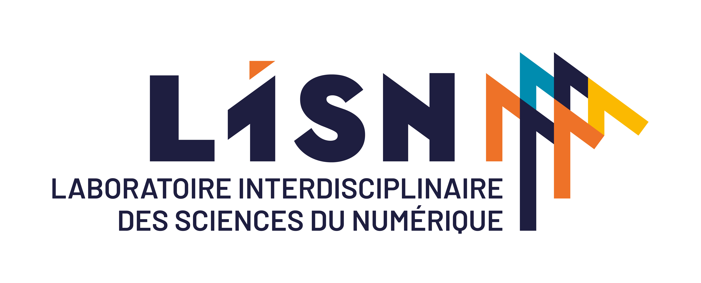
Supervised Research Project, LISN, January to March 2026
Investigated biomedical
entity
linking strategies to normalize PICO entities (Population, Intervention, Comparison, Outcome) to the MeSH
knowledge base. Developed and evaluated a hybrid normalization pipeline, comparing a custom rule-based script
with a state-of-the-art graph-based entity linking model.
Research Internship, LISN, May to August 2025
Analyzed biomedical entity linking
models
on the BELB benchmark, focusing on generalization to rare or complex mentions. Developed quantitative and
visual analyses of dataset characteristics (mention length, ambiguity, frequency) and their impact on
prediction quality. Compared recent models, identified consistent weaknesses, and proposed improvements. The
work was published at MIE 2026.
Supervised Research Project, LISN, January to May 2025
Studied the impact of class
imbalance on classification tasks using a spherical teacher-student perceptron. Conducted experiments in
Python (Scikit-Learn, NumPy, Matplotlib) with different noise levels, loss functions, and training methods
(gradient descent, Langevin dynamics). Showed that the optimal imbalance ratio in training sets differs from
0.5. The work was published at JDSE 2025.
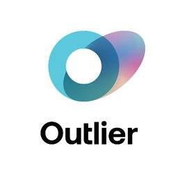
Generative AI Trainer, Outlier and Alignerr (remote), January 2025 to August
2025
Evaluated
and refined LLM reasoning trajectories on complex coding and mathematical tasks under rigorous alignment
protocols. Designed adversarial prompts and assessed multi-step outputs to reduce hallucinations and improve
factual grounding for RLHF pipelines.
Some of my projects
Peekaboo: Do Predictive Coding Networks Keep Track of Hidden Objects? (ongoing)
A digit moves behind an occluder and reappears, as expected or in a surprising way. This ongoing project
measures what a predictive coding video model (PredNet, reimplemented in PyTorch) predicts while the object
is hidden, what its internal state still encodes about it, and how its prediction errors react to surprising
reappearances. A synthetic generator provides full ground truth, and ConvLSTM and Kalman filter baselines
are coming next. The pilot PredNet already predicts the next frame with an error 95% below the blank frame
baseline. You can explore the complete implementation and source code on my GitHub.
Structure Detection in Fusion Plasma Simulations:
Developed a multi-stage detection pipeline for blob structures in fusion plasma simulations, designed for a
very small labeled set. A first YOLOv8 detector is trained on the labeled frames, then retrained with
pseudo-labels selected by an MLP on hand-crafted features (intensity statistics, Sobel gradients). At
inference, geometric filters and a patch CNN trained on the detector's own errors remove false positives.
Reached 81% AP50 and finished 4th out of 94 on a Codabench challenge. You can explore the complete
implementation and source code on my GitHub.
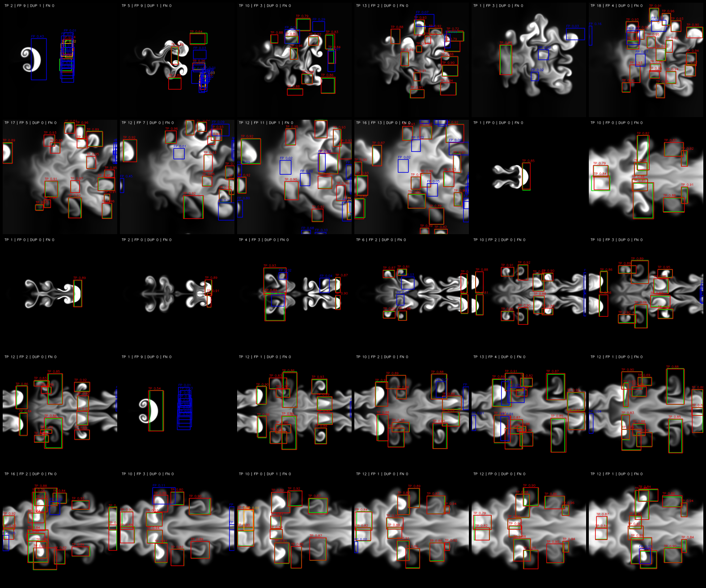
Point-Based Counting of Cereals and Legumes in Intercropped Fields:
Adapted PET (a point-query crowd-counting transformer) to estimate per-species plant density for wheat-pea
intercrops from close-range smartphone imagery. Addressed overlapping plant morphology by transitioning to
invariant leaf-tip annotations for wheat, coupled with input resolution scaling and edge-border filtering.
Achieved 4.7% MAPE (74.2% F1) on wheat tips and 7.8% MAPE (86.2% F1) on pea plants. This is the code of my JDSE 2026 poster.
You can explore the complete implementation and source code on my GitHub.
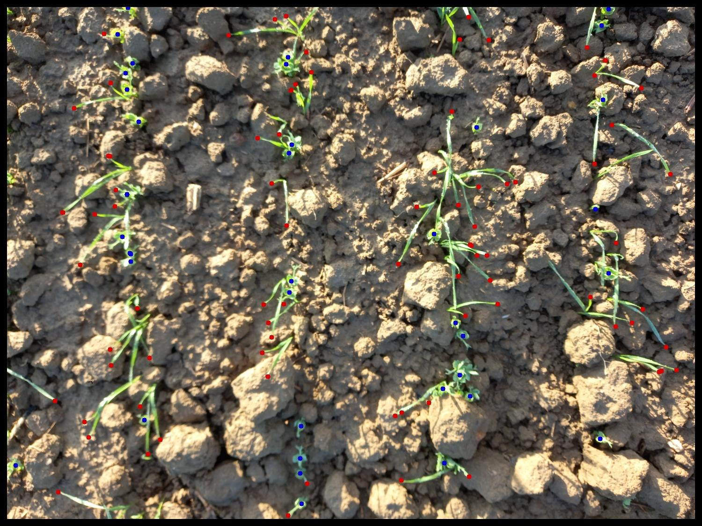
Unpaired Image-to-Image Translation (CycleGAN):
Re-implemented the CycleGAN architecture entirely in pure NumPy, without using any autograd library like
PyTorch or TensorFlow. This project involved hand-coding the forward and backward passes for ResNet
generators and PatchGAN discriminators, as well as the cycle consistency (𝐿1 ≈ 0.20) and identity losses.
Despite the CPU constraints, the model successfully demonstrated the cycle consistency effect on the
apple2orange and horse2zebra datasets. You can explore the complete implementation and source code on my GitHub.
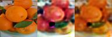
Scientific Article Information Retrieval:
Built, in a team of three, a progressive citation retrieval pipeline on a corpus of 20,000 papers. Starting
from TF-IDF and MiniLM baselines (MAP 0.45), we added BM25, four dense encoders, and citation contexts mined
from the full text, then combined 16 signals with an XGBoost learning to rank model to reach a MAP of 0.67.
You can explore the complete implementation and source code on my GitHub.
Measuring Market Impact of Financial News:
Built in a team of four a frugal pipeline that turns financial news into (date, ticker, impact) events. I
developed the hierarchical map-reduce summarizer (fine-tuned Flan-T5-large, ROUGE-L 0.27) and its
LLM-as-a-judge audit of numeric fidelity and issuer grounding. A baseline predicting next-day abnormal
returns from the summaries showed no usable signal (test ROC-AUC 0.45), a negative result discussed in the
report. You can explore the complete implementation and source code on my GitHub.
Spherical Teacher-Student Perceptron:
Implemented from scratch in NumPy a spherical teacher-student perceptron, to study how class imbalance in
the training data affects classification. Experiments compare loss functions, noise levels, and training
methods (gradient descent and Langevin dynamics), and show that the optimal class ratio in the training set
differs from 0.5. This is the code of my JDSE 2025 paper. You can explore the complete implementation and
source code on my GitHub.
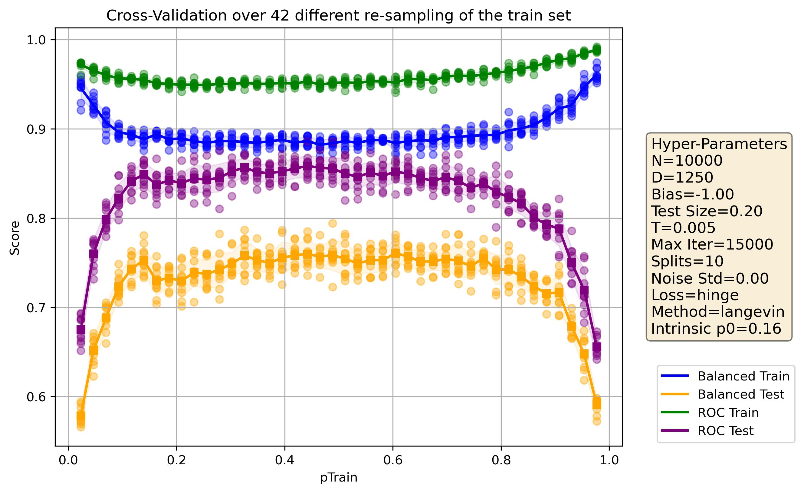
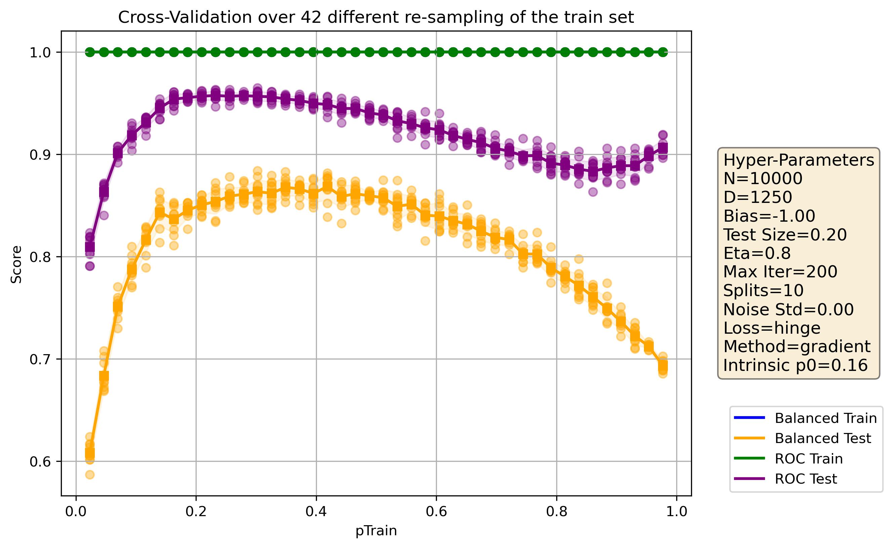
Fairness in AI: Bias in Medical Image Classification:
Measured and reduced the bias of a chest X-ray classifier (sick or healthy) across age and sex groups, using
the true and false positive rates of each group. Compared pre-processing methods (sample reweighting,
Kamiran and Calders) with post-processing methods (reject option classification, equalized odds). On the
reweighted model, post-processing narrowed the gap in true positive rates between groups from 0.19 to 0.10.
You can explore the complete implementation and source code on my GitHub.
You can find more examples of my work on my GitHub.
Skills
Programming Languages
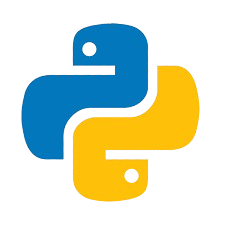
Python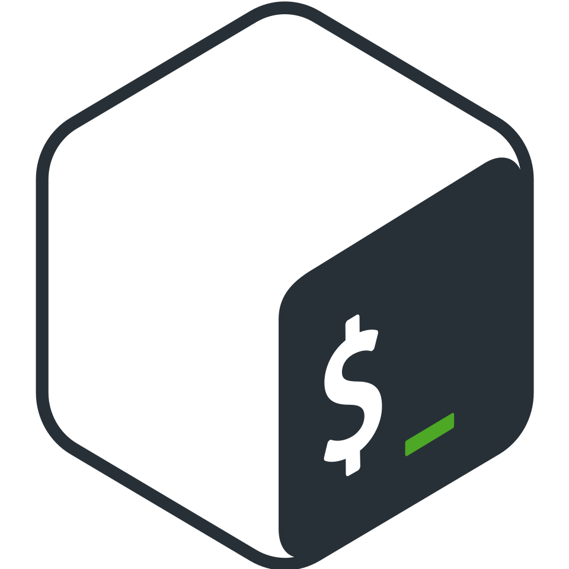
Bash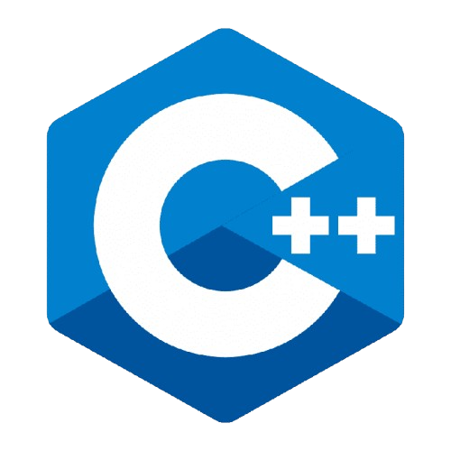
C++/C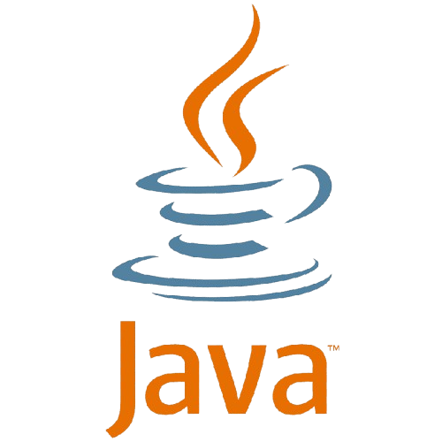
Java- OCaml
- SQL
Artificial Intelligence
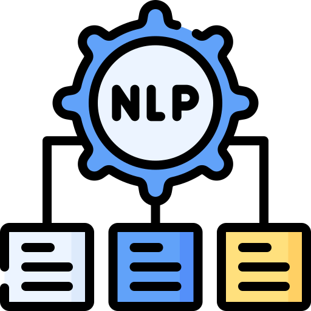
NLP- Computer Vision
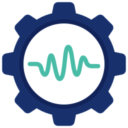
Signal Processing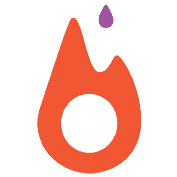
PyTorch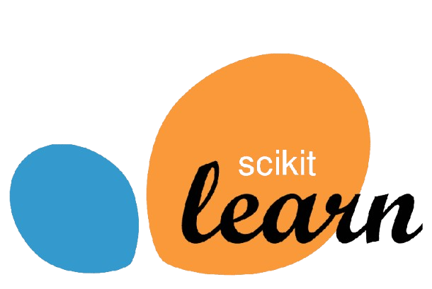
Scikit-Learn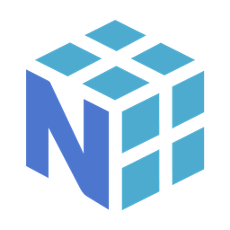
NumPy
Tools
- Slurm
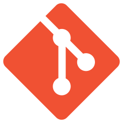
Git- Hugging Face
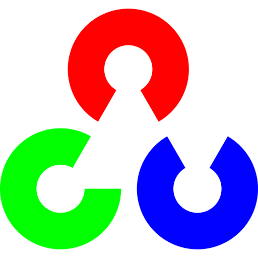
OpenCV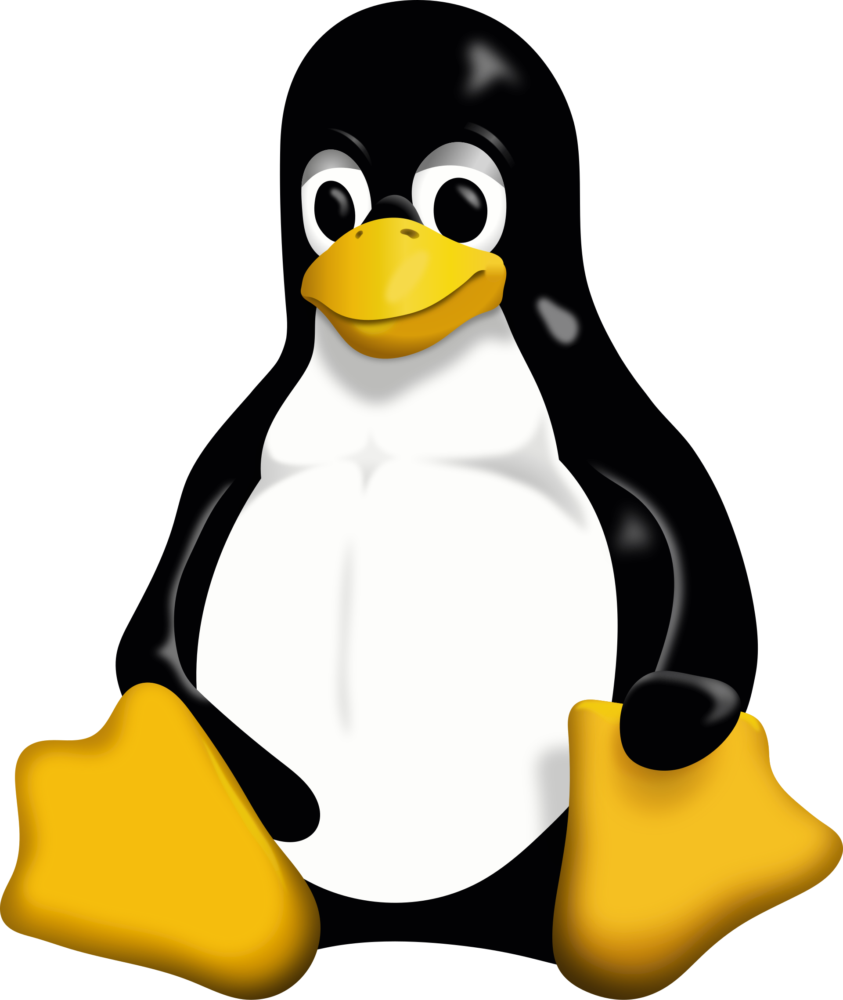
Linux- LaTeX
Languages
 Native
Native- Bilingual Proficiency - TOEFL: 108/120 - TOEIC: 990/990
- Conversational
Try It Yourself
Java-like Interpreter (Kawa):
An interpreter for Kawa, a small object-oriented language inspired by Java, written in OCaml with OCamllex
and Menhir. It covers lexing, parsing, static type checking, and interpretation, with classes, inheritance,
and methods. Try a simplified version below, compiled to JavaScript. The complete source code is available
on my GitHub.
Code Execution
Online Tools: Two small web apps that I built and maintain.
CV
Generator
lets you design your CV with a lot of freedom and many options for its layout, sections, and style, then
gives
you the LaTeX source, compiles it into a PDF for you, or opens it as an Overleaf project.
LinguaGuess is a
game where you have to identify the language of a short passage among Slavic, Romance, and Nordic languages,
with a
public leaderboard.